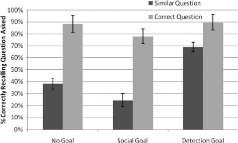
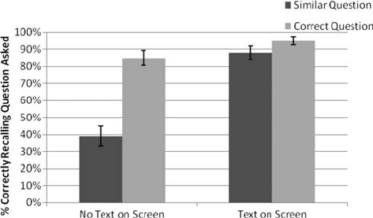

The Artful Dodger: Answering the Wrong Question the Right Way
Todd Rogers
ideas42, Cambridge, MA, and Analyst Institute,
Washington, DC
Michael I. Norton
Harvard Business School
What happens when speakers try to “dodge” a question they would rather not answer by answering a
different question? In 4 studies, we show that listeners can fail to detect dodges when speakers answer
similar—but objectively incorrect—questions (the “artful dodge”), a detection failure that goes hand-
in-hand with a failure to rate dodgers more negatively. We propose that dodges go undetected because
listeners’ attention is not usually directed toward a goal of dodge detection (i.e., Is this person answering
the question?) but rather toward a goal of social evaluation (i.e., Do I like this person?). Listeners were
not blind to all dodge attempts, however. Dodge detection increased when listeners’ attention was
diverted from social goals toward determining the relevance of the speaker’s answers (Study 1), when
speakers answered a question egregiously dissimilar to the one asked (Study 2), and when listeners’
attention was directed to the question asked by keeping it visible during speakers’ answers (Study 4). We
also examined the interpersonal consequences of dodge attempts: When listeners were guided to detect
dodges, they rated speakers more negatively (Study 2), and listeners rated speakers who answered a
similar question in a fluent manner more positively than speakers who answered the actual question but
disfluently (Study 3). These results add to the literatures on both Gricean conversational norms and
goal-directed attention. We discuss the practical implications of our findings in the contexts of interper-
sonal communication and public debates.
Keywords: Gricean norms, conversational implicature, goal-directed attention, inattentional blindness
Don’t answer the question you were asked. Answer the question you
wish you were asked.
—Robert McNamara, describing the lessons he learned during his
time as Secretary of Defense during the Vietnam War (Morris, Wil-
liams, & Ahlberg, 2004)
As this opening quote demonstrates, many in public life seek to
master the artful dodge, frequently attempting to wriggle out from
answering questions they would rather avoid. Although perhaps
most grating when performed by politicians, question dodging
occurs in a wide array of other contexts: corporate executives
avoiding reporters’ requests for their expectations for the next
fiscal quarter, employees sidestepping their bosses’ questions as to
why they are late for the third straight day, or spouses evading their
partners’ inquiries as to their whereabouts the previous evening.
Under what conditions does a dodge go undetected, allowing
speakers to escape unscathed? In the studies that follow, we show
that dodges can go undetected when a speaker responds to a
question by offering an answer to a similar question rather than the
actual question asked—provided that the listener’s attention is not
directed to explicitly assess whether the speaker answered the
question asked. As an illustration, consider a politician who is
asked about the illegal drug problem in America and instead
provides an answer about the need for universal health care: We
suggest that he has engaged in a successful dodge if listeners have
forgotten the question he was asked at the end of his answer.
Successful (and unsuccessful) question dodging can also have
interpersonal consequences; we also explore whether listeners rate
the speaker as positively after a successful dodge as they would
have had he/she been asked the question answered. Indeed, we
propose that in some cases, speakers are evaluated more highly
when they answer a similar question fluently than when they
answer the correct question disfluently.
How is it possible that listeners could fail to notice such ques-
tion dodging? We suggest that dodgers mask their deception by
exploiting implicit norms that direct listeners’ attention away from
detecting whether a particular answer truly addresses the specific
question asked. The title of our article is taken from the Dickens
character, the Artful Dodger, who was skillful at distracting the
attention of his victims with conversation as he picked their
pockets (Dickens, 1838/1994); by assuming that friendly conver-
sation implied a lack of guile, his victims made themselves vul-
nerable to his thievery. Indeed, Grice’s (1989) theory of conver-
sational implicature posits that listeners make assumptions about
the good faith cooperation of speakers. His “Cooperative Princi-
ple” has four constituent maxims: Communication will (a) contain
the appropriate quantity of information; (b) be of truthful quality;
(c) be delivered in an appropriate manner; and, most crucial to the
present investigation, (d) will be relevant to the topic at hand.
Deceptive communication, in this view, is communication that
violates any of these maxims (see also Burgoon, Buller, Guerrero,
This article was published Online First April 25, 2011.
Todd Rogers, ideas42, Cambridge, MA, and Analyst Institute, Wash-
ington, DC; Michael I. Norton, Department of Marketing, Harvard Busi-
ness School.
We thank Max Bazerman, Bill Simpson, Carey Morewedge, and Debby
Kermer for helpful feedback on this article. We also thank Greg Barron,
Natasia de Silva, and Adi Sundaram for help with materials development.
Correspondence concerning this article should be addressed to Todd
Rogers, 1870 North Scott St #649, Arlington, VA 22209. E-mail:
todd.rogers.mail@gmail.com
Journal of Experimental Psychology: Applied © 2011 American Psychological Association
2011, Vol. 17, No. 2, 139–147 1076-898X/11/$12.00 DOI: 10.1037/a0023439
139
Afifi, & Feldman, 1996; McCornack, 1992). In support of this
theory, previous research has demonstrated that speakers prompted
to generate deceptive communication do in fact construct mes-
sages that violate these maxims, listeners rate deceptive commu-
nication as violating these maxims to a greater degree than truthful
communication, and listeners rate communication that violates
these maxims as more deceptive and less honest (Buller & Bur-
goon, 1996; McCornack, Levine, Torres, Solowczuk, & Campbell,
1992; Yeung, Levine, & Nishiyama, 1999).
Whereas previous research has focused on how speakers violate
Gricean norms when producing deceptive communications, we
focus on a different implication of those norms. Because listeners
assume that speakers generally abide by such norms, speakers may
be given the benefit of the doubt when they adhere closely enough
to conversational norms (Burgoon, Blair, & Strom, 2008; Clark &
Clark, 1977; O’Sullivan, 2003). Furthermore, whereas previous
research has demonstrated that egregious violations of conversa-
tional norms are likely to be detected, we suggest that the same
norms allow speakers to push the boundaries of communication:
When speakers answer a question that is similar enough to the
question asked, listeners may fail to notice that the answer offered
is, in fact, irrelevant. In line with previous research, however, we
do suggest that when speakers stray too far—answering questions
that are egregiously dissimilar—listeners are likely to notice.
Why might listeners be susceptible to dodging? We suggest that
the competing goals of listeners coupled with the limited nature of
their attentional capacity contribute to the failure to detect dodges.
First, a large body of research has documented the limited capacity
of attention, such that orienting toward one stimulus degrades
attention toward others (Cherry, 1953; Miller, 1956; Posner,
1980); for example, attending to the goal of counting basketball
passes made by a group of people can cause viewers to fail to
notice a man in a gorilla suit walking through the game (Simons &
Chabris, 1999). Although attending to whether a speaker has
actually answered a question is clearly an important goal for
listeners, it competes with other, often more automatic, goals. In
particular, research has suggested that when people encounter
someone new, they automatically pursue the social goal of evalu-
ating that person: Do I like this person? Do I trust this person?
(Cuddy, Fiske, & Glick, 2008). Indeed, social interactions can
cause people to fail to notice even jarringly incongruous state-
ments, as when people acquiesce to requests (“May I cut in line to
make a copy . . .”) accompanied by substantively irrelevant “rea-
sons” (“. . . because I need to make a copy?”; Langer, Blank, &
Chanowitz, 1978).
Given attentional limitations, we suggest that the automaticity of
listeners’ social goal of forming an impression of speakers makes
them vulnerable to failing to notice when a speaker dodges a
question asked by answering a similar question instead. In short,
we suggest that when listeners hear a speaker answer a question,
their assumption that the speaker will follow norms of cooperative
communication makes them vulnerable to failing to notice that the
speaker is not answering the question asked, and is instead pro-
viding an answer to an altogether different question.
Recall the previously described example: A politician’s mes-
saging consultants have advised him to talk about health care in an
upcoming debate, regardless of the actual questions asked. Should
the politician be asked about health care, his prepared answer
about health care will, of course, be a relevant and correct re-
sponse. However, should the question be about the illegal drug
problem, we suggest that the answer about health care is similar
enough that listeners would fail to detect the dodge. Should the
question be about the War on Terror, however, that answer would
be too dissimilar from the question asked, prompting listeners to
detect that the speaker attempted to dodge the question asked.
Thus, the similarity between the question asked and the question
answered is one crucial determinant of dodge detection. But also,
as outlined above, answering a similar question should only go
unnoticed when listeners’ attention is not directed toward dodge
detection. We predicted that focusing attention on whether the
politician answers the question asked should increase detection of
dodge attempts. Thus, the attentional goal of the listener was our
second proposed key factor in determining dodge detection.
Overview of Experiments
We tested the role of these two factors in four experiments,
investigating when dodge attempts will be noticed by listeners,
while also exploring the consequences of dodging on listeners’
interpersonal perceptions of speakers. In Study 1, participants
watched a debate in which a speaker answered the correct question
or answered a similar question. We also varied the listeners’ goals
(social evaluation vs. dodge detection) to examine the impact of
goals on dodge detection. In Study 2, participants listened to a
debate in which a speaker answered the correct question, answered
a similar question, or answered a dissimilar question. We assessed
the impact of similarity on dodge detection, as well as the impact
of successful and unsuccessful question dodges on listeners’ social
evaluation of the speaker. In Study 3, we included a condition in
which the speaker answered the correct question but in a disfluent
manner, exploring whether answering a similar question well
might be perceived more positively than answering the correct
question poorly. Finally, in Study 4, we explored a practical
intervention to increase the likelihood of dodge detection—making
the question asked more salient—that shifts listeners’ attention
toward dodge detection goals.
Study 1: Goals, Attention, and Successful Dodges
In Study 1, we explored how social goals contribute to listeners’
failure to detect question dodging. Participants watched an excerpt
of a debate in which a speaker answered the correct question (the
question he was asked) or a similar question (a topically related
question), and they were later asked to identify what question the
speaker had been asked. We expected that participants who viewed
a speaker answering a similar question would frequently fail to
realize that the speaker did not answer the question he had been
asked. Most important for our account, we predicted that the goal
that participants brought to viewing the debate would impact their
likelihood of dodge detection. Some participants were directed to
attend to how they socially evaluated the speaker (social goal),
some were directed to attend to whether the speaker answered the
question he was asked (detection goal), and others were given no
specific guidance (no goal). We expected that the social-goal and
no-goal conditions would result in the same low rates of dodge
detection, suggesting that participants’ default goal under the no-
goal condition was, in fact, social evaluation. We also expected,
however, that diverting attention from the default social goal
140
ROGERS AND NORTON
toward whether the speaker answered the question asked would
increase dodge detection, suggesting that limited attention is one of
the causes of listeners’ failure to detect dodges. We had two
specific hypotheses. First,
Hypothesis 1: Overall, recall of the question asked will be
lower when speakers answer a similar question relative to
when speakers answer the correct question.
Reflecting the role of attention, our second hypothesis was that
the following:
Hypothesis 2: Listeners directed to attend to whether the
speaker answered the question asked will exhibit increased
dodge detection compared with listeners directed to attend to
either a social goal or no specific goal.
Method
Participants. Listeners (N ϭ 333, 70% women, M
age
ϭ 47.1
years, SD ϭ 23.2) completed the study online. They were recruited
using an online survey company that compensated participants
with an online currency worth less than $8.
Procedure. In this study, each participant watched a 4-min
clip of a mock political debate designed to simulate an actual
televised debate (Norton & Goethals, 2004). Participants were
randomly assigned to one condition of a 3 (goal: none, social,
dodge detection) ϫ 2 (dodge: correct, similar) between-subjects
design.
Participants given no goal were told to pay attention because
they would be asked questions about the clips afterward. Partici-
pants given a social goal were instructed to attend closely to how
they felt about the speakers and whether or not they liked the
speakers; they were told that they would later be asked about their
feelings. Participants given a detection goal were instructed to
attend to whether or not the speakers were answering the questions
they were asked; they were told they would later be asked about
the questions the speakers were asked.
All clips began with a question about education for the first
speaker, to which the speaker provided an answer about education.
The second speaker was then asked to give his opinion about
universal health care or asked to give his opinion about illegal drug
use in America. The second speaker’s response was always the
same, an answer about universal health care (see the Appendix).
Thus, participants either heard the second speaker answer the
correct question or a similar (but incorrect) question.
After listening to the entire clip, listeners completed two
multiple-choice questions recalling the question asked of each
speaker. The answer choices were education, health care, the drug
problem, or the War on Terror.
Results
Pretest. To establish that the answer to the similar question
was indeed recognized as being incorrect, we asked a different
group of participants (n ϭ 48) to read the second speaker’s answer
and select which question best fit that answer, given the same
four-option multiple-choice question. Fully 94% of listeners iden-
tified health care as the question that the second speaker answered,
2
(2) ϭ 78.88, p Ͻ .001. Removed from the difficulty of following
a live exchange, these participants experienced little uncertainty as
to which question fit the answer they had just read, suggesting that
listeners who recalled incorrectly in the results below from the live
exchanges were truly forgetting the question the speaker was
asked.
Dodge detection. Before addressing the first two hypothe-
ses, we first define what constitutes a successful dodge. Success
in question dodging entails listeners being less likely to recall
the question asked of a speaker when the speaker answers a
different question than when the speaker answers the actual
question. In the example discussed above, a successful dodge
occurs when the speaker responds to a question about illegal
drug use with an answer about health care, and listeners fail to
identify that the actual question was about illegal drug use. A
dodge is detected, on the other hand, when listeners recall the
actual question asked despite the speaker’s efforts to dodge it by
answering a similar question. We measured dodge detection by
assessing whether listeners selected the correct multiple-choice
response regarding which question the second speaker was asked.
Given that there were only four options, this left listeners with a
25% chance of randomly selecting the correct response. Consistent
with recent research (Levine, 2001), we conceptualized dodge
detection as occurring on a binary scale (accurately detected or
not) as opposed to on a continuous scale.
First, Hypothesis 1 predicted that, overall, recall of the question
asked would be lower when speakers answered similar questions
compared with when speakers answered the correct question. As
expected, listeners who heard the speaker answer a correct ques-
tion were more accurate at recalling the question asked of the
second speaker (85%, n ϭ 177) than were listeners who heard the
speaker answer a similar question (45%, n ϭ 156),
2
(1) ϭ 60.7,
p Ͻ .001, ϭ.43, suggesting that answering a similar question
impaired listeners’ ability to remember the actual question the
speaker was asked. Indeed, although 55% of all listeners offered an
incorrect response when the speaker had been asked about illegal
drug use, 40% of all listeners offered the specific incorrect re-
sponse that the speaker had been asked about health care—
reflecting that the speaker’s strategy of answering a question about
illegal drugs with an answer about health care had convinced many
listeners that he had actually been asked the question he chose to
answer.
Whereas Hypothesis 1 predicted an overall effect of question
dodging, Hypothesis 2 made a prediction about the impact of
specific goals on dodge detection. Hypothesis 2 predicted that
dodge detection would be greater among participants who were
asked whether the speaker answered the question asked compared
with those who were given the social goal or no goal.
Listeners in the no-goal–correct condition were more accurate
at recalling the question asked of the second speaker (88%, n ϭ
51) than those in the no-goal–similar condition (39%, n ϭ 52),
2
(1) ϭ 27.4, p Ͻ .001, ϭ.52. As expected, results for
participants given a social goal were strikingly similar: Listeners in
the social-goal–correct condition were more accurate (78%, n ϭ
59) than those in the social-goal–similar condition (25%, n ϭ 49),
2
(1) ϭ 30.8, p Ͻ .001, ϭ.53. Confirming Hypothesis 2, there
was no significant difference in dodge detection among partici-
pants in the no-goal and social-goal conditions when the second
speaker answered a similar question,
2
(1) ϭ 2.3, p ϭ .10.
141
ARTFUL DODGER

Hypothesis 2 also predicted that when compared with partici-
pants with no goal or a social goal, participants with a detection
goal would exhibit increased dodge detection when the speaker
answered a similar question. As can be seen clearly in Figure 1, the
incidence of dodge detection in the similar condition when partic-
ipants were given a detection goal was significantly higher than
detection in both the no-goal–similar condition (69% vs. 39%),
2
(1) ϭ 10.1, p ϭ .001, ϭ.31, and the social-goal–similar
condition (69% vs. 25%),
2
(1) ϭ 20.7, p Ͻ .001, ϭ.45.
Study 2: (Dis)similarity and Dodge Detection
Study 1 explored our first key factor contributing to dodge
detection—the goal of the listener—demonstrating that under de-
fault social goal conditions, answering a similar question can result
in successful question dodging. Although Study 1 began to exam-
ine the role of our second key contributor—similarity—in Study 2,
we extended the range of similarity, examining how answering a
dissimilar question can increase dodge detection. Of the three
conditions in Study 2, two were the same as in Study 1: a condition
in which the speaker answers the correct question and a condition
in which the speaker answers a similar question. We also included
a new condition in which the speaker answers an egregiously
dissimilar question: In this new condition, the speaker was asked
about the War on Terror, but he offered the same answer about
universal health care. Thus, we varied whether the speaker an-
swered the correct question (about health care), a similar question
(about the illegal drug use problem), or a dissimilar question
(about the War on Terror). In Study 2, we used audio excerpts
from a mock debate between two speakers, using the same text as
in Study 1. We hypothesized the following:
Hypothesis 3: Dodge detection will be greater when speakers
answer questions that are highly dissimilar to the actual
question asked than when speakers answer questions that are
similar to the actual question asked.
In addition, Study 2 explored not just the extent to which
listeners detected dodge attempts but the interpersonal ramifica-
tions of detecting such dodges. The objective of artful dodgers, of
course, is to avoid answering the actual question and to ensure that
listeners fail to notice. We predicted that when listeners do notice
that speakers have violated the Gricean norm of relevance, the
speaker would suffer interpersonal costs. Hypothesis 3 predicted
that listeners would be more likely to detect dodges when the
speaker answered a dissimilar question than when the speaker
answered a similar question, we predicted the following:
Hypothesis 4: Listeners who hear a speaker dodge a question
by answering a dissimilar question will evaluate the speaker
more negatively than listeners who hear a speaker dodge a
question by answering a similar question.
Method
Participants. Listeners (N ϭ 243, 57% women, M
age
ϭ 43.0
years, SD ϭ 12.7) completed the study in a computer lab as part of
a larger set of studies in exchange for $20.
Procedure. Listeners heard an audio excerpt from a mock
debate that began with a question about education for the first
speaker, to which the speaker provided an answer about education.
Listeners were then randomly assigned to one of three conditions
in which the question asked of the second speaker was varied; as
in Study 1, the second speaker always responded by answering a
question about universal health care. Some listeners heard the
speaker asked a question about health care (correct condition),
some heard the speaker asked about the illegal drug problem
(similar condition), and others heard him asked a question about
the War on Terror (dissimilar condition), before hearing his answer
about health care.
After listening to the entire excerpt, listeners evaluated both
speakers on four interpersonal dimensions: how much they trusted
him, how much they liked him, how honest he was, and how
capable he was, all on 6-point scales (1 ϭ not at all to 6 ϭ very
much). We created a composite index of these items (Cronbach’s
␣ϭ.95).
Finally, respondents answered the four-option multiple-choice
questions about which question each speaker had been asked, as in
Study 1.
Results
Pretest. To confirm that the question about the illegal drug
problem was more similar to the health care question than the
question about the War on Terror, a separate sample of participants
(n ϭ 48) rated how similar both the illegal drug problem and the
War on Terror were to health care on 7-point scales. As expected,
the illegal drug problem was rated as more similar to health care
(M ϭ 4.90, SD ϭ 1.56) than the War on Terror (M ϭ 2.98, SD ϭ
1.62), t(47) ϭ 6.14, p Ͻ .01, d ϭ 1.20.
Dodge detection. Accuracy in recalling the question asked of
the second speaker varied across conditions,
2
(2) ϭ 15.13, p Ͻ
.01, ϭ.25. However, listeners who heard the speaker answer the
correct question (82%, n ϭ 82) and those who heard him answer
a dissimilar question about the War on Terror (70%, n ϭ 74) were
not significantly different in their ability to recall the actual ques-
tion,
2
(1) ϭ 2.81, p ϭ .09. Thus, speakers’ attempts to answer a
dissimilar question prompted listeners to notice that dodge; rather
than believing that the speaker had actually been asked a question
related to the answer he offered (about health care), participants
remembered that he had been asked about the War on Terror.
Figure 1. The impact of similarity and goals on recall of correct question
(Study 1). Error bars signify one standard error of the mean.
142
ROGERS AND NORTON
In contrast, as in Study 1, listeners who heard the speaker
answer a similar question were significantly worse at recalling the
actual question asked: Just 54% did so, lower than both other
conditions,
2
s(1) Ͼ 4.45, ps Ͻ .04, s Ͼ .16 (see Table 1).
Whereas 46% of all listeners offered an incorrect response, 26% of
all listeners offered the specific incorrect response that the speaker
had been asked about health care, demonstrating that his answer
about health care had led them to believe that he had been asked
about health care. Replicating Hypothesis 1, answering a similar
question resulted in a successful dodge; consistent with Hypothesis
3, dodging the question by answering a dissimilar question resulted
in recall on par with when the speaker answered the correct
question.
Interpersonal evaluations. Ratings of the second speaker on
our composite measure of interpersonal evaluation were impacted
by our manipulation, F(2, 240) ϭ 7.05, p Ͻ .005. Supporting
Hypothesis 4, listeners who heard the speaker answer a dissimilar
question rated him more negatively (M ϭ 2.75, SD ϭ 1.39) than
those who heard the speaker answer the correct question (M ϭ
3.46, SD ϭ 1.22) or a similar question (M ϭ 3.28, SD ϭ 1.06),
ts Ͼ 2.75, ps Ͻ .01, ds Ͼ 1.0 (see Table 1). It is important to note
that evaluations of the speaker who answered the correct question
and those of the speaker who answered a similar question did not
differ, t(167) ϭ 1.02, p Ͼ .31, suggesting that dodging by answer-
ing a similar question can be as effective, in interpersonal terms, as
actually answering the correct question. Ratings of the first speaker
were not impacted by our manipulations, F(2, 242) ϭ 0.96, p ϭ
.38.
Was the success of the second speaker’s dodge related to lis-
teners’ interpersonal ratings of him? When the speaker answered a
dissimilar question, listeners’ ratings were highly and negatively
correlated with whether they recalled the actual question (and thus
noticed the speaker’s unsuccessful dodge attempt), r(74) ϭϪ.49,
p Ͻ .001; a less-than-artful dodge thus had serious consequences
for the would-be dodger. In contrast, no such relationships
emerged when the speaker answered the correct question, r(82) ϭ
.11, p Ͼ .31, or answered a similar question r(87) ϭ .08, p Ͼ .46.
These findings suggest that there are interpersonal costs of unsuc-
cessful dodge attempts, whereas artful dodging can effectively
sidestep those costs.
Study 3: Answer the Correct Question Poorly,
or Dodge?
The previous studies demonstrated that speakers can get away
with dodging a question without being detected and without social
cost by answering a similar question. In everyday life, people often
attempt to dodge questions when they are not prepared with a good
answer to the question asked—as in the example of politicians
stammering through poorly phrased answers to questions for
which they are not prepared. Indeed, another of Grice’s (1989)
conversational norms suggests that listeners expect speakers to
offer answers in an appropriate manner—one aspect of which is
that it not be delivered in an inappropriate style. In Study 2, we
compared the efficacy of dodging a question by answering a
similar question to bumbling through an answer to the correct
question. We expected that providing a well-delivered answer to a
similar question would result in lower recall of the question asked
than answering the correct question, replicating Hypothesis 1.
Moreover, we expected that interpersonal evaluations of speakers
who successfully dodged questions by answering a similar ques-
tion would not be significantly different from evaluations of speak-
ers who answered the correct question, replicating Hypothesis 4.
Study 3 tested an additional hypothesis:
Hypothesis 5: Listeners who hear a speaker answer the cor-
rect question in a disfluent manner will evaluate the speaker
more negatively than listeners who hear a speaker offer a
fluent answer to a similar question.
Method
Participants. Listeners (N ϭ 275, 56% women, M
age
ϭ 39.2
years, SD ϭ 15.5) completed the study online. They were recruited
using an online survey company that compensated participants
with an online currency worth less than $8.
Procedure. In this study, listeners were assigned to watch
one of three video clips of a mock political debate. The first two
conditions used same videos as in Study 1: one in which the
second speaker offered an answer to the correct question (which
was about health care) and another in which the second speaker
offered an answer to a similar question (which was about the
illegal drug problem). We created a third condition in which the
second speaker offered an answer to the correct question (which
was about health care) using the identical text as the other condi-
tions but while fumbling through his answer, adding pauses,
“um”s, and “uh”s throughout.
Listeners evaluated both speakers on the same four interpersonal
dimensions as in Study 2; we again created a composite index
(Cronbach’s ␣ϭ.93).
Finally, listeners answered the four-option multiple-choice
question about what question both speakers had been asked, as in
the previous studies.
Results
Dodge detection. Listeners’ ability to identify the question
asked of the second speaker was again impacted by our manipu-
lation,
2
(2) ϭ 8.50, p Ͻ .02,
c
ϭ .19. As in Study 1, listeners
were generally able to identify that the question asked of the
second speaker was about health care when he answered the
correct question, whether he answered it well (84%, n ϭ 87) or
poorly (84%, n ϭ 73; see Table 2). Recall in both conditions was
significantly higher than when he answered a similar question,
where just 67% (n ϭ 83) recalled the actual question asked,
2
s(1) Ͼ 5.36, ps Ͻ .03, s Ͼ .18, again replicating Hypothesis 1.
Whereas 32% of all listeners offered an incorrect response in the
Table 1
Impact of Similarity on Recall of Correct Question and
Interpersonal Ratings (Study 2)
Variable
Condition
Correct Similar Dissimilar
Mean (SD) interpersonal ratings 3.46 (1.22) 3.28 (1.06) 2.75 (1.39)
Recalling the actual question, % 82 54 70
143
ARTFUL DODGER
similar condition, 24% of all listeners offered the specific incorrect
response that the speaker had been asked about health care.
Interpersonal evaluations. Evaluations of the second
speaker were impacted by our manipulations, F(2, 272) ϭ 5.26,
p Ͻ .01. Replicating Hypothesis 4, evaluations of the speaker did
not differ whether the speaker provided a good answer to the
correct question (M ϭ 3.31, SD ϭ 1.13) or to a similar question
(M ϭ 3.24, SD ϭ 1.28), t(188) ϭ 0.45, p Ͼ .65. Evaluations of the
speaker who answered the correct question but did so poorly,
however, were significantly lower than both other conditions (M ϭ
2.78, SD ϭ 1.12), ts Ͼ 2.51, ps Ͻ .02, ds Ͼ 0.38. Thus, supporting
Hypothesis 5, speakers who made an effort to answer the correct
question—but who did so poorly—were rated less positively than
those who made no effort to answer the correct question, instead
answering a similar question well (see Table 2). Ratings of the first
speaker did not vary by condition, F(2, 272) ϭ 1.81, p Ͼ .16.
Study 4: A Practical Intervention for Increasing
Dodge Detection
Studies 1 through 3 documented some of the underlying causes
and social consequences of dodge detection. In Study 4, we tested
an intervention that could be used in situations where dodges occur
to increase dodge detection: posting the text of the question asked
of the speakers on the screen during their answers. Indeed, this
strategy has recently been employed by the TV media during some
political debates. This intervention also provides a naturalistic
example of one of our earlier manipulations; in Study 1, partici-
pants provided with a detection goal—those whose attention had
been diverted from a social evaluation goal toward evaluating the
content of the speaker’s answer—showed improved dodge detec-
tion. We expected that posting the text on the screen would serve
a similar attentional function, shifting their focus from merely
evaluating the speaker on social dimensions to reminding listeners
to evaluate the relevance of the answer offered, thereby increasing
dodge detection. To the extent that participants watching a speaker
dodge a question are uncertain as to whether the speaker is in fact
dodging, posting the question on the screen—drawing attention to
the dodge attempt—should reduce that uncertainty, leading to
accurate detection of dodging.
In conditions in which the text of the question did not remain on
the screen, we expected to again replicate Hypothesis 1: Listeners
who heard the speaker answer a correct question would be more
accurate at recalling the actual question asked than listeners who
heard the speaker answer a similar question. We also tested one
final hypothesis in Study 4:
Hypothesis 6: Listeners who see the text of the question
posted on the screen during the speakers’ answers will exhibit
greater dodge detection than listeners who do not see the text
of the question posted on the screen.
Method
Participants. Listeners (N ϭ 288, 68% women, M
age
ϭ 47.0
years, SD ϭ 11.3) completed the study online. They were recruited
using an online survey company that compensated participants
with an online currency worth $8.
Procedure. In this study, listeners watched the same video
clips used in Study 1. As in Study 1, all clips began with a question
about education for the first speaker, which this speaker answered.
Listeners were then randomly assigned to one of four conditions in
a 2 (dodge: correct, similar) ϫ 2 (text on screen: absent, present)
between-subjects design. As before, listeners either watched the
second speaker answer the correct question (about health care) or
a similar question (about the illegal drug problem). As in the other
studies, the second speaker’s response was identical across all
condition, always about health care. In addition, some listeners
watched the videos with the text of the questions present on the
screen during the responses, and others watched with the text
absent.
Following the video, participants were redirected to a new
screen that did not have either images from the debate or text; as
in Study 1, listeners were asked to recall the questions the speakers
had been asked using the same four-option multiple-choice ques-
tions.
Results
Hypothesis 6 predicted that posting the questions asked of the
speakers on the screen while they delivered their answers would
increase dodge detection. This was confirmed: Listeners who
heard the second speaker answer a different question than the one
he was asked were much more likely to recall the actual question
asked when the text was posted on the screen (88%, n ϭ 72) as
opposed to when it was not (39%, n ϭ 71),
2
(1) ϭ 35.7, p Ͻ .001,
ϭ.50 (see Figure 2). When the questions were absent from the
screen, listeners were again more likely to identify the second
speaker’s actual question when he answered the correct question
(85%, n ϭ 68) than when he answered a similar question (39%),
2
(1) ϭ 31.0, p Ͻ .001, ϭ.47, replicating Hypothesis 1.
Consistent with the above studies, whereas 61% of all listeners
who heard the speaker answer the similar question failed to cor-
Table 2
Impact of Similarity and Fluency on Recall of Correct Question and Interpersonal Ratings
(Study 3)
Variable
Condition
Correct
(delivered fluently)
Similar
(delivered fluently)
Correct
(delivered disfluently)
Mean (SD) interpersonal ratings 3.31 (1.13) 3.24 (1.28) 2.78 (1.12)
Recalling the actual question, % 84 68 84
144
ROGERS AND NORTON

rectly recall the question asked of the second speaker, 44% of all
listeners in those conditions believed he was asked about health
care. When the text was posted on the screen, however, respon-
dents who watched the second speaker answer a similar question
were able to recall the actual question (88%) as well as those who
watched him answer the correct question (95%, n ϭ 77),
2
(1) ϭ
2.4, p ϭ .10.
As predicted, posting the text of the question on the screen—and
therefore diverting attention toward dodge detection—signifi-
cantly decreased the second speaker’s ability to successfully dodge
questions.
General Discussion
We might expect that when people dodge a question by answer-
ing a different question, listeners would both notice the dodge and
rate the dodger negatively. To the contrary, we found that listeners
engaged in a default goal of socially evaluating speakers did not
rate speakers poorly when they dodged a question by answering a
similar question—a lack of disapproval that went hand-in-hand
with their failure to detect that the speaker had dodged. We
proposed, and offered evidence in support of, two key factors in
dodge detection: the attentional goal of the listener and the simi-
larity of the answer offered to the actual question asked. We
demonstrated the role of goals by showing that when listeners were
given a direct goal to attend to the relevance of speakers’ answers
to the questions they were asked (Study 1), or their attention was
drawn to the speaker’s answers by posting the text of the question
on the screen (Study 4), dodge detection increased. We docu-
mented the role of similarity by showing that, although answering
a similar question often went undetected (Studies 1, 2, 3, and 4),
answering a question that was egregiously dissimilar increased
dodge detection (Study 2). Finally, we explored the interpersonal
consequences of successful and unsuccessful dodges: Listeners
rated speakers who answered a similar question as positively as
those who answered the correct question, but they rated those who
answered a dissimilar question and those who answered the correct
question in a disfluent manner more negatively (Studies 2 and 3).
We focused on two factors that contribute to the failure to detect
dodges, but future research should explore other factors that con-
tribute to and moderate the phenomenon. First, the current studies
examined question dodging from the perspective of outside ob-
servers—viewers of a televised political debate. In the examples
with which we opened the article, however, we noted that question
dodging often occurs in more directly interpersonal contexts: be-
tween romantic partners or between employers and employees.
Future research should explore the extent to which direct interper-
sonal contact moderates the frequency of dodge detection. One
view would suggest that the more interpersonal, the more likely
dodges would be detected: An employer is likely more motivated
and engaged in obtaining the truth from an employee than a TV
viewer causally watching a debate. At the same time, as reviewed
in the introduction, interpersonal interactions require a great deal
of attention and can lead people to fail to notice even glaringly
obvious information (Langer et al., 1978; Simons & Chabris,
1999). As a result, further research is needed to explore the impact
of variation in the interpersonal nature of interactions on dodge
detection.
Second, individual differences—in both attention and motiva-
tion—are likely to influence dodge detection. Given the important
role of attention in the failure to detect dodges, it is possible that
individual differences in working memory may moderate listeners’
susceptibility to dodging (Kane & Engle, 2003). In addition, the
inherent motivation of listeners to detect dodges is likely to play a
role. For example, we might expect individuals who are more
politically engaged to be more likely to detect politicians’ efforts
to dodge. Although our studies were not designed to test this
question, in Study 1, we did assess whether participants had voted
in the 2008 presidential election, a proxy for political engagement.
It is interesting that a logistic regression revealed no evidence of an
interaction between voting and dodge detection, Wald(1) ϭ 0.20,
p Ͼ .65; voters and nonvoters were equally likely to fail to detect
dodges. Still, we expect that a finer grained approach to political
engagement—for example, measuring people’s partisan affiliation
and commitment—would impact detection.
Third, we have proposed and offered evidence for a goal-directed
attentional mechanism underlying dodge detection, but there are
likely other processes that contribute to the failure to notice dodges. In
particular, the role of reconstructive memory processes warrants fur-
ther attention. A large body of research has demonstrated that mem-
ories for past events can be strongly influenced by suggestions that
such events occurred; people have been shown to misremember
events ranging from meeting Bugs Bunny at Disney World to becom-
ing sick after eating particular foods as a child (Bernstein & Loftus,
2009; Loftus, 1997). Our results suggest that people are unable to
remember an initial question when a speaker answers a similar ques-
tion; future research should explore the extent to which speakers’
efforts to dodge actually change listeners’ memory of the initial
question, such that they might actually create a vivid memory of the
questioner asking the wrong question.
Our findings offer new insight into the impact of Gricean norms in
communication. Whereas much of the previous research in this area
has explored whether and how deceptive communication violates
these norms (e.g., Burgoon et al., 1996; McCornack, 1992), we
explored how listeners’ assumptions about the relevance of speakers’
answers set the stage for speakers to choose not to answer the actual
question they were asked without negative consequences. Our results
are consistent with an interpretation that listeners adopt a default goal
of evaluating speakers on social dimensions, and that this default goal
leaves listeners susceptible to dodges—although further research is
needed to confirm this causal pathway. At the same time, however,
Figure 2. The impact of posting question text on recall of correct ques-
tion (Study 4). Error bars signify one standard error of the mean.
145
ARTFUL DODGER
we showed that when dodges are detected—as when speakers answer
questions that are too dissimilar—listeners rate them more negatively
for their attempt to dodge.
From a practical standpoint, we identified several strategies for
counteracting these limitations. The results of Study 4, for exam-
ple, suggest that a practice occasionally used by TV networks
during political debates may increase dodge detection among
listeners. Indeed, recall of the question when the speaker attempted
to dodge by answering a similar question more than doubled, from
39% without the text to 88% with the text. This is not only
statistically significant but practically significant. Given concerns
that voters are uninformed or misinformed and the many calls for
increased education of voters—from politicians and pundits
alike—these results suggest that very simple interventions can
dramatically increase the extent to which voters are focused on the
substance of politicians’ answers rather than their personal style
(Shenkman, 2007; for discussion of the consequences for public
policy of uninformed and misinformed voters, see Caplan, 2007).
At the same time, however, we expect that not all question sum-
maries are created equally. The question summaries posted during
political debates are often overly vague (i.e., “the economy”), a
vagueness that ironically might facilitate question dodging when
the question answered is similar to that vague summary but dif-
ferent from the question actually asked.
In many situations, such interventions are unlikely to be feasi-
ble. It would undoubtedly be awkward to hold up a sign indicating
the specific question you expected an acquaintance to be answer-
ing, for example. This is especially unfortunate because the low
rates of recall in our experiments are, if anything, overestimates of
people’s ability to detect dodges. After all, we presented listeners
with a forced-choice four-option question—giving them a 25%
chance at simply guessing the right answer. Obviously, this forced-
choice prompting does not arise naturally in the world. Accord-
ingly, increasing dodge detection in everyday interactions may be
no easy task. At the same time, however, we note that although we
have focused on the negative aspects of failing to detect dodges,
constant monitoring of potential dodges may be undesirable during
many interactions. For example, successful dodging may prevent
needless social friction in low-consequence interactions, as when
someone asks coworkers for their opinion on a new outfit. In
addition, dodge detection goals may be particularly harmful when
people engage in creative, wide-ranging conversations. Such ex-
changes are typified by people making connections that are objec-
tively irrelevant to the immediate question at hand (De Bono,
1968). Still, our results suggest that in many cases, dodges cause
sought-after and relevant information to go unspoken, with little
awareness and few consequences.
References
Bernstein, D. M., & Loftus, E. F. (2009). The consequences of false
memories for food preferences and choices. Perspectives on Psycholog-
ical Science, 4, 135–139.
Buller, D. B., & Burgoon, J. K. (1996). Interpersonal deception theory.
Communication Theory, 6, 203–242.
Burgoon, J. K., Blair, J. P., & Strom, R. E. (2008). Cognitive biases and
nonverbal cue availability in detecting deception. Human Communica-
tion Research, 34, 572–599.
Burgoon, J. K., Buller, D. B., Guerrero, L. K., Afifi, W. A., & Feldman,
C. M. (1996). Interpersonal deception: XII. Information management
dimensions underlying types of deceptive messages. Communication
Monographs, 63, 50–69.
Caplan, B. (2007). The myth of the rational voter: Why democracies choose
bad policies. Princeton, NJ: Princeton University Press.
Cherry, E. C. (1953). Some experiments on the recognition of speech, with
one and with two ears. Journal of the Acoustical Society of America, 25,
975–979.
Clark, H., & Clark, E. (1977). Psychology and language. New York:
Harcourt Brace Jovanovich.
Cuddy, A. J. C., Fiske, S. T., & Glick, P. (2008). Warmth and competence as
universal dimensions of social perception: The Stereotype Content Model
and the BIAS Map. In M. P. Zanna (Ed.), Advances in experimental social
psychology (Vol. 40, pp. 61–149). New York: Academic Press.
De Bono, E. (1968). New think; the use of lateral thinking in the generation
of new ideas. New York: Basic Books.
Dickens, C. (1994). Oliver Twist. New York: Penguin. (Original work
published 1838)
Grice, H. P. (1989). Studies in the way of words. Cambridge, MA: Harvard
University Press.
Kane, M. J., & Engle, R. W. (2003). Working memory capacity and the
control of attention: The contributions of goal neglect, response com-
petition, and task set to Stroop interference. Journal of Experimental
Psychology: General, 132, 47–70.
Langer, E. J., Blank, A., & Chanowitz, B. (1978). The mindlessness of
ostensibly thoughtful action. Journal of Personality and Social Psychol-
ogy, 36, 635–642.
Levine, T. R. (2001). Dichotomous and continuous views of deception: A
reexamination of deception ratings in information manipulation theory.
Communication Research Reports, 18, 230–240.
Loftus, E. F. (1997). Creating false memories. Scientific American, 277,
70–75.
McCornack, S. A. (1992). Information manipulation theory. Communica-
tion Monographs, 59, 1–16.
McCornack, S. A., Levine, T. R., Torres, H. I., Solowczuk, K. A., &
Campbell, D. M. (1992). When the alteration of information is viewed as
deception: An empirical test of information manipulation theory. Com-
munication Monographs, 59, 17–29.
Miller, G. A. (1956). The magical number seven plus or minus two: Some limits
on our capacity for processing information. Psychological Review, 63, 81–97.
Morris, E. (Producer and Director), Williams, M. (Producer), & Ahlberg, J.
(Producer). (2004). The fog of war: Eleven lessons from the life of Robert S.
McNamara [Motion picture]. United States: Sony Pictures Classics.
Norton, M. I., & Goethals, G. R. (2004). Spin (and pitch) doctors: Cam-
paign strategies in televised political debates. Political Behavior, 26,
227–248.
O’Sullivan, M. (2003). The fundamental attribution error in detecting
deception: The body-who-cried-wolf effect. Personality and Social Psy-
chology Bulletin, 29, 1316 –1327.
Posner, M. I. (1980). Orienting of attention. Quarterly Journal of Exper-
imental Psychology, 32, 3–25.
Shenkman, R. (2007). Just how stupid are we? Facing the truth about the
American voter. New York: Basic Books.
Simons, D. J., & Chabris, C. F. (1999). Gorillas in our midst: Sustained
inattentional blindness for dynamic events. Perception, 28, 1059–1074.
Yeung, L. N. T., Levine, T. R., & Nishiyama, K. (1999). Information
manipulation theory and perceptions of deception in Hong Kong. Com-
munication Reports, 12(1), 1–11.
146
ROGERS AND NORTON

Appendix
Scripts Used in All Studies
Q1: What do you see as the major factors that need to be
addressed regarding the American education system?
A1: I’m glad you asked me about this. When I think about
America’s future there are so many important pressing needs, and
education is the root of America’s future. When every child in
America receives a good education, our country will advance even
further to lead the world technologically and productively. The
first two factors that need to be addressed are getting the kids to
stay in school through motivation and positive role models and
ensuring that the time spent in school is not wasted and the
curricula in schools are advanced. Too many children are not being
motivated to achieve. Instead, they are motivated only to do the
minimum. We need to motivate our kids. Teachers should act as
mentors and friends, giving students a sense of self-worth and
accomplishment. Parents need to encourage their kids to do the
best they can and instill values and hard work and achievement in
them. Parents and teachers can act as positive role models, but so
can other adults that children have access to, people like actors and
even politicians. If we demonstrate that working hard pays off,
children will be more motivated to stay in school. In terms of the
curricula, schools across the country are teaching entirely different
things. A child should be able to get the same education across the
country. Furthermore, an education should be practical. Students
should learn the skills necessary to go on to college or to get a job.
We need to make sure that classrooms are productive places and
teachers cover material so that our students have the most knowl-
edge possible when they graduate from high school and enter the
world.
Q2: What are your main concerns about the way in which
Americans receive health care?
Q3: What are your main concerns about the rising drug problem
in America?
Q4: (Study 2 only) What are your main concerns regarding the
War on Terror?
A2: I am glad you asked me about this. There are so many
challenges facing America today. Many of our problems have
arisen because too many Americans cannot afford the care that
they need. Costs are always increasing and if you do not have
insurance, certain necessary procedures can be out of the question.
Even if the government were to distribute aid, it would be difficult
to determine to whom and how much. As the costs of care rise, it
becomes more and more difficult for the government to pay for
this care for so many people. Individual costs go up and insurance
costs go up. While most employers provide insurance, increased
costs will have negative effects on this provision as well, which
will undoubtedly lower the number of insured Americans. It seems
to me that the primary problem is the cost of health care and we
need to address the problem by developing new technologies and
processes to lower the costs. Once we have lowered the costs, we
can begin to address the larger issues of distribution of aid and
revamping the systems that are already in place. However, before
we lower the costs, my main concern is that Americans are not
receiving the health care that they all need because they are not
financially able.
Received February 25, 2010
Revision received January 11, 2011
Accepted February 14, 2011 Ⅲ
E-Mail Notification of Your Latest Issue Online!
Would you like to know when the next issue of your favorite APA journal will be available
online? This service is now available to you. Sign up at http://notify.apa.org/ and you will be
notified by e-mail when issues of interest to you become available!
147
ARTFUL DODGER